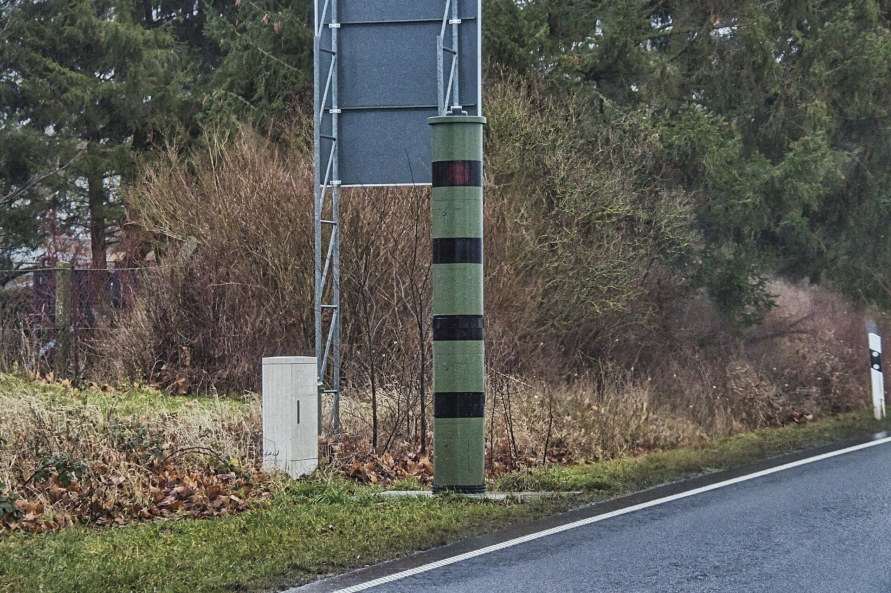
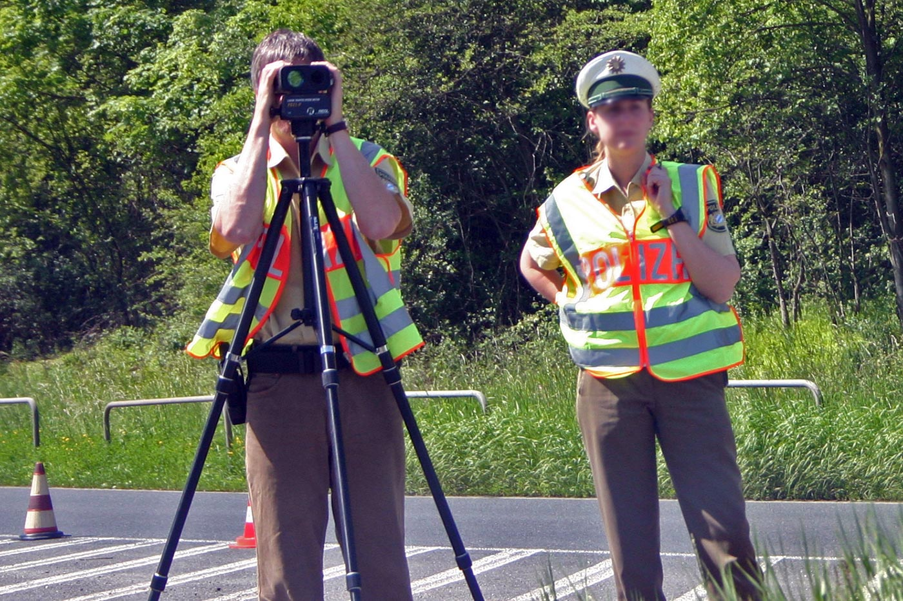
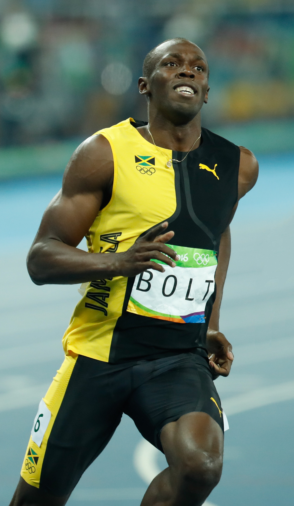

Drei Bilder, eine Frage. Klick auf ein Bild zeigt es groß. Taste 1, 2 oder 3 tut dasselbe, Escape schließt.



Der Weltrekord über 100 m: Usain Bolt, Berlin 2009, 9,58 s. Das sind im Schnitt 10,44 m/s oder 37,6 km/h. Sein schnellster Abschnitt lag bei über 44 km/h.